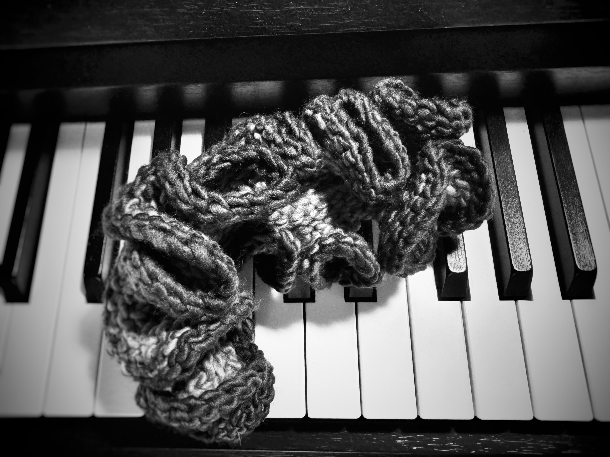
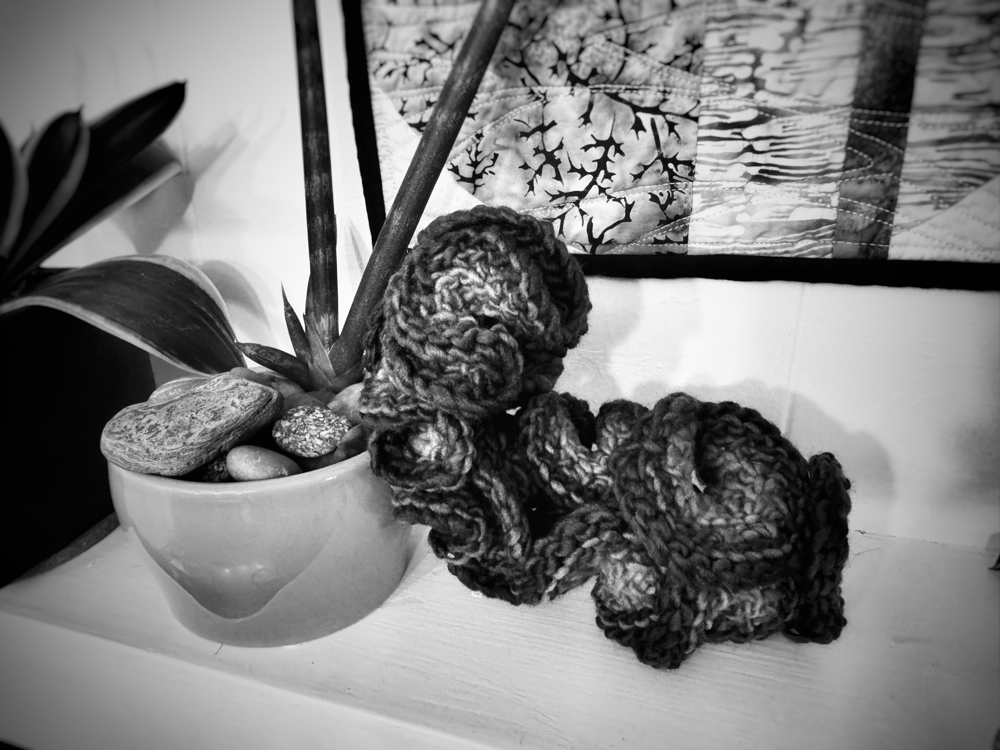

Wooly Nudibranch of the Month
Seafoam

I
am
and
I love to listen.
I love snuggles.
I love adventure.
There is a universe in every tidepool, every seashell, every drop of water. I am a quiet meditator and enjoy the little details.
I love music.
I love to have rooted friends.
.........................
Seafoam am looking for a new place to call my home. They wish to be in a home that has an appreciation for hyperbolic geometries. They are made of second-hand yarn that is likely wool from a pet-free(except snails and fish), nut-free, smoke-free home.
Seafoam can get hand washed on cold or else there will be felting.
If you wish to adopt Seafoam, DM me on mathstodon.
There is an adoption fee of $100 plus shipping. There is only one Seafoam - they are unique. Shipping may not be possible to all locations.
This work is licensed under CC BY-SA 4.0